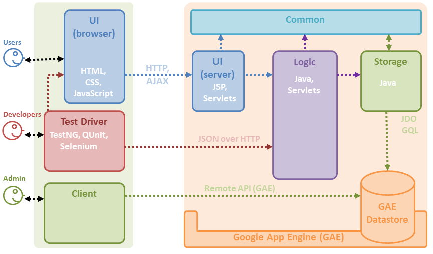
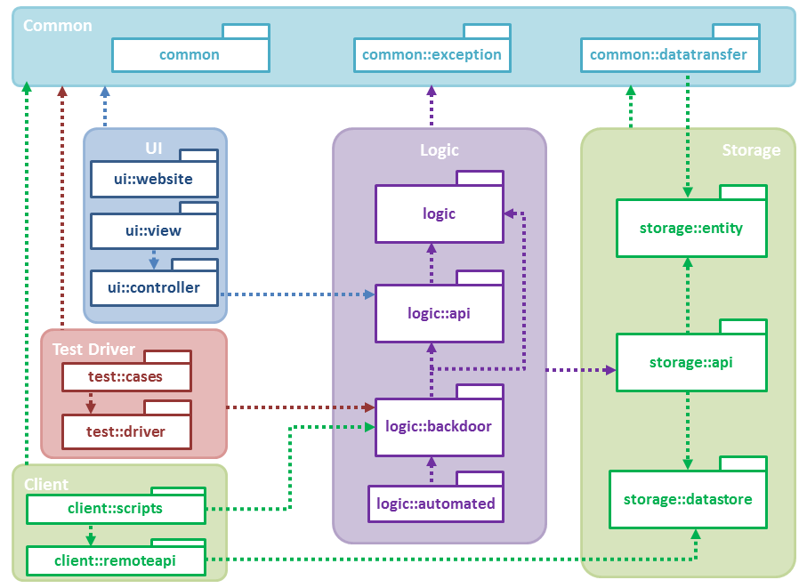
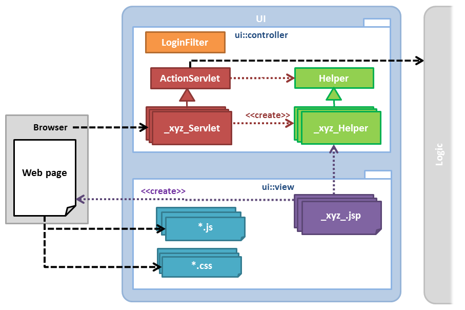
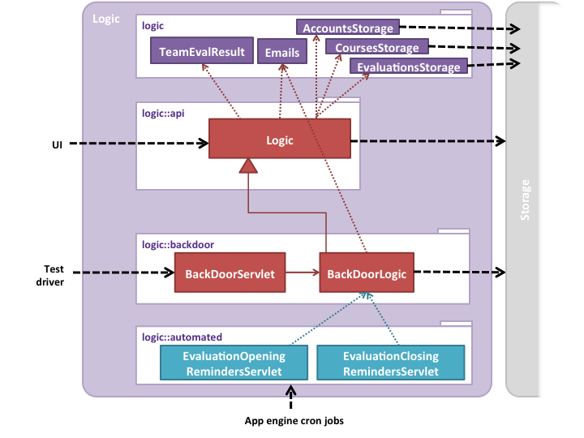
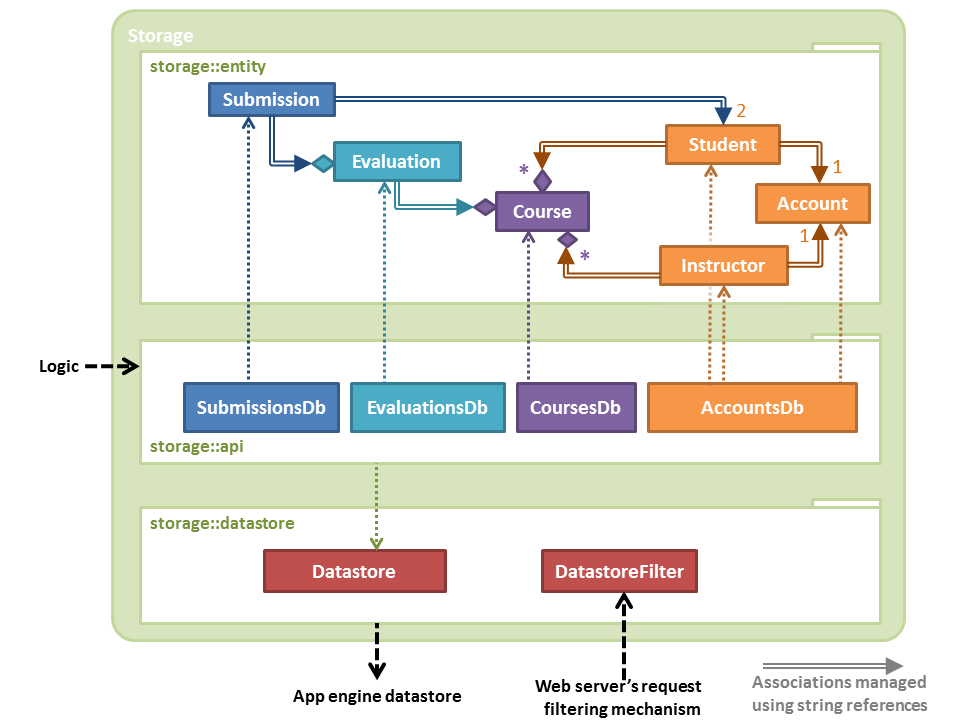
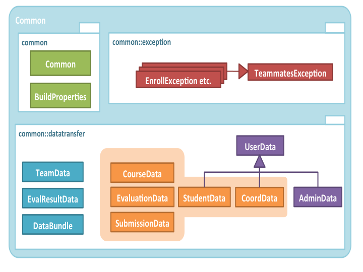
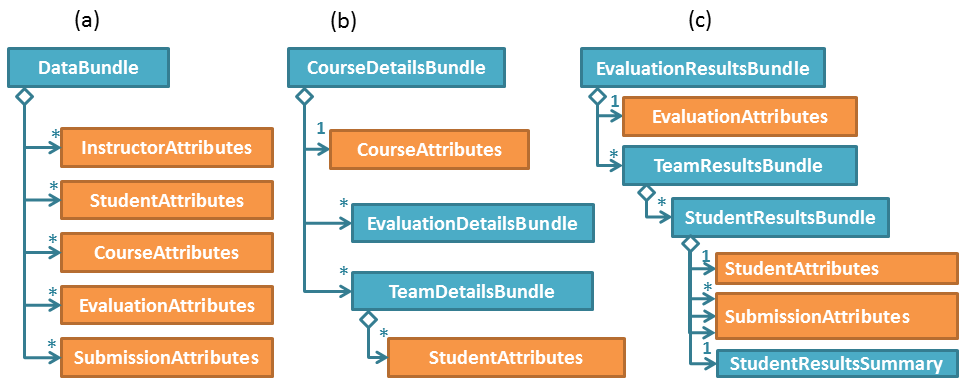
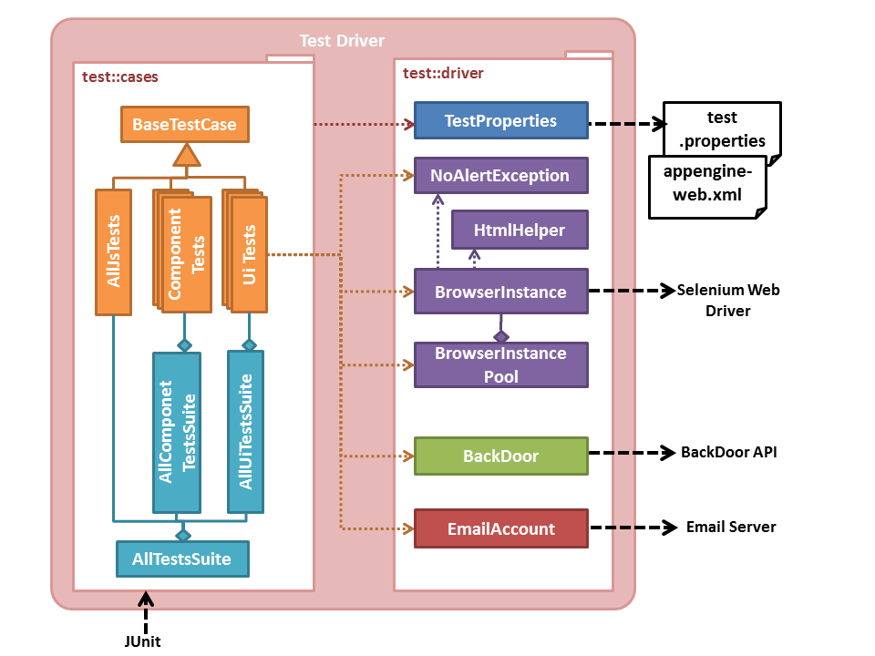

![TEAMMATES[Logo] - Online Peer Feedback/Evaluation System for Student Team Projects](/images/teammateslogo.jpg)
TEAMMATES
Online Peer Evaluation & Peer Feedback System
[Developer Manual (DevMan)]
Table of Contents
Project
Vision
Long term goal: Become the biggest student project in the world.{Biggest = many contributors, many users, relatively large code base (50k-100k LoC), evolving over a long period.}
'Biggest' above also implies an exceptionally high quality standard because high quality is a necessity for the long-term survival of a big student project.
This project will also serve as a model and a training ground for Software Engineering students who want to learn SE skills in the context of a non-trivial real software product.
Challenges
The project differs from typical student projects in the following areas, which makes it more challenging and the experience more enriching.- Developers: All developers are novices and their involvement with the project is short term and part time.
- Code: Working with legacy code written by past developers is harder than writing from scratch.
- Data: The data in the live system are confidential and developers are not allowed to see them. This makes troubleshooting harder.
- Releases: Frequent releases to an active user database requires us to maintain 'production quality' constantly.
- Platform: TEAMMATES is running on
Google App Engine cloud platform, which adds the following
challenges.
- It is an emerging platform evolving rapidly. We have to keep up.
- It imposes various restrictions on the application. e.g. Each request to the app has to be served within 60 seconds.
- It charges us based on usage. We have to optimize usage.
- Software Engineering: As TEAMMATES serve as a model system for training students, it should also focus on applying good SE techniques.
Principles
We apply these principles to meet the challenges stated above.- We keep moving forward, always: We release frequently, in weekly time-boxed iterations. Every week, our product becomes better than the previous week. This means 'go back and rewrite from scratch' is only a last resort.
- We are agile: We are able to change the system quickly and easily to match emerging requirements. We aim for minimal yet sufficient documentation.
- We defend our code with tests, fiercely: Since we practice collective code ownership, we have to make sure the code is not accidentally broken by others. We use fully automated regression testing. The testing automation level of this project is probably higher than 99% of the projects out there.
- We are 'Gods' of the few tools we use: We stick to a minimal toolset. Adding third-party tools and libraries to the project is done only if there is a STRONG justification. Only mature, stable, and well-supported tools are considered. Once selected, we should know the tool very well to get the best out of it.
- We value quality more than functionality: Our job is not to 'anyhow get it to work'. The system should be good enough to be considered a 'model' software. Our code should be of 'unusually' high quality: All code is reviewed before accepting.
- We know what we are doing: For us, it is not enough to know something is broken, we should also know why it is broken. It is not enough to get something working, we should know how we got it to work.
- We seek the best, not stop at the first: We do not settle for the first workable method to solve a problem. We study other ways of solving it and decide what is the best way for us.
- We take pains to save the team from pain: Whenever we had to spend effort in figuring out something, we refine code/documents so that others don't have to go through the same pain. Whenever we figured out a less painful way of doing something, we make sure everyone in the team learn it too.
Design
Architecture

TEAMMATES is a Web app that runs on Google App Engine (GAE) cloud platform. Given above is an overview of the main components.
- UI: The UI seen by users consists of Web pages containing HTML, CSS (for styling) and JavaScripts (for client-side interactions such as sorting, input validation etc.). This UI is generated by Java Server Pages (JSP) and Java Servlets residing on the server. Requests are sent to the server over normal HTTP. In future, AJAX may be used sparingly to fetch data from the server asynchronously.
- Logic: The main logic of the app is in Java POJOs (Plain Old Java Objects). Some automated tasks are implemented as Servlets.
- Storage: Storage uses the persistence framework provided by GAE 'datastore', a noSQL database.
- Test Driver: TEAMMATES makes heavy use of automated regression testing. TestNG is used for Java unit testing and QUnit for JavaScript unit testing. We use Selenium Web Driver to automate UI testing. Test Driver can access the application directly to set up test data. We use JSON format to transmit such data to the application.
- Client: The Client component can connect to the back end directly without using a Browser. It is used for administrative purposes. e.g., migrating data to a new schema
- Common: The Common component contains utility code used across the application.

Notes:
- [logic] - [ui::view] - [ui::controller] represent an application of Model-View-Controller pattern.
- ui::view and ui::website packages are not Java packages. They consist of jsp, html, js and css files.
UI
The diagram below shows the object structure of the UI component.

Request flow
Request from the Browser for a specific page will go through following steps:
- Request received by the GAE server.
- Custom filters are applied according to the order specified in web.xml. In our case this would be DatastoreFilter and LoginFilter. For example, the LoginFilter will forward any request from not-logged-in users to the login page. If the request is from logged in user, then it will proceed according to the URL. e.g. /page/instructorHomePage
- Request forwarded to the ControllerServlet.
- ControllerServlet uses the ActionFactory to generate the matching Action object. E.g., InstructorHomePageAction.
- ControllerServlet executes the action.
- The Action object checks the access rights of the user. If the action is allowed, it interacts with the Logic component to perform the action.
- Assuming the action was loading a page, the Action gathers the data required for the page into a PageData object. e.g. InstructorHomePageData, creates a ShowPageResult object by encolosing the PageData object created previously, and returns it to the ControllerServlet
- ControllerServlert "sends" the result. In the case of a ShowPageResult, this is equivalent to forwarding to the matching JSP page.
- The JSP page uses the data in the given PageData object to generate the HTML page.
- The response will then be sent back to the Browser, which will render the page.
- After performing certain actions, the Browser should load
another page, possibly with the status of the previous action. For
example, if the action is 'delete course', the Browser should load
the 'courses' page after the server performed the action. In such
cases, the result generated for the action will be of type RedirectResult which simply instructs the Browser
to send a fresh request for the specified page. In such cases, we do
not create a PageData object for the
original request.
Example:- Browser request for 'delete course' action.
- Server performs the action (creates a RedirectResult object but no PageData object) and instructs the Browser to load the 'courses' page.
- As instructed, the Browser requests for the 'courses' page.
- Server processes the request separately (creates a ShowPageResult object but and a PageData object) and returns the 'courses' page.
- The result of some actions is downloading of a file (e.g. an evaluation report). In such cases, the result type will be FileDownloadResult and no PageData object will be generated.
- Since the high-level workflow of processing a request is same for any request, we use the , the Template Method pattern to abstract the process folow into the Action class.
- The list of actions and corresponding URIs are listed in the ActionURIs nested class of the Const class.
- The list of pages and corresponding URIs are listed in the ViewURIs nested class of the Const class.
Types of pages
The UI consist of following pages:- Product pages (functional): e.g., 'courses' page. These require login.
- Product pages (peripheral): e.g., help pages, error pages. etc.
- Website pages: These are the static pages of the product website. e.g., contact.html
- Project pages: Pages meant for developers, such as this page.
Logic
The Logic component handles the business logic of TEAMMATES.It is accessible via a thin facade class called Logic which makes use of several *Logic classes to handle the logic related to various types of data and to access data from the Storage component. In particular, Logic is responsible for these:
- Managing relationships between entities. e.g., cascade logic for create/update/delete.
- Managing transactions. e.g., to ensure atomicity of a transaction.
- Sanitizing input values recevied from the UI component.
- Providing a mechanims for checking access control rights.

Package overiew:
- logic.api: Provides the normal API of the component.
- logic.backdoor: Provides a mechanism for the test driver to access data.
- logic.core: Contains the core logic of the system.
- logic.automated: Contains the logic of automated tasks.
Logic API
Represented by these classes:- Logic: For the use of the UI. Logic class acts as a facade between UI (servlets) and the backend of the app.
- GateKeeper: For the use of the UI. To check the access rights of a user for a given action.
- BackDoorLogic: For the use of TestDriver (via BackDoorServlet)
Policies
General:- Null values should not be used as parameters to this API, except when following the KeepExisting policy (explained later).
Access control:
- Although this component provides methods to perform access control, it API itself is not access controlled. The UI is expected to check access control (using GateKeeper class) before calling a method in the Logic.
- However, calls received by BackDoorServlet are authenticated using the 'backdoor key'. Backdoor key is a string known only to the person who deployed the app (typically, the administrator).
API for creating entities:
- Null parameters: Causes an assertion failure.
- Invalid parameters: Throws InvalidParametersException.
- Entity already exists: Throws EntityAlreadyExists exception (escalated from Storage level).
- When creating Evaluations, Submission entities are automatically created at the time of creating an evaluation or changing the team structure of a course.
API for retrieving entities:
- Attempting to retrieve objects using null parameters: Causes an assertion failure.
- Entity not found:
-Returns null if the target entity not found. This way, read operations can be used easily for checking the existence of an entity.
-Throws EntityDoesNotExistsExeption if a parent entity of a target entity is not found e.g., trying to list students of a non-existent course.
API for updating entities:
- Primary keys cannot be edited except: Student.email.
- KeepExistingPolicy: the new value of an optional attribute is specified as null or set to “Uninitialized”, the existing value will prevail. {This is not a good policy. To be reconsidered}.
- Null parameters: Throws an assertion error if that parameter cannot be null. Optional attributes follow KeepExistingPolicy.
- Entity not found: Throws EntityDoesNotExistException exception.
- Invalid parameters: Throws InvalidParametersException.
API for deleting entities:
- Null parameters: Not expected. Results in assertion failure.
- FailDeleteSilentlyPolicy: In general, delete operation do not throw exceptions if the target entity does not exist. Instead, it logs a warning. This is because if it does not exist, it is as good as deleted.
- Cascade policy: When a parent entity is deleted, entities
that have referential integrity with the deleted entity should also
be deleted.
Refer to the API for the cascade logic.
Storage
The Storage component performs CRUD (Create, Read, Update, Delete) operations on data entities individually.

Package overiew:
- storage.api: Provides the normal API of the component.
- storage.entity: Classes that represent persistable entities.
- storage.datastore: Classes for dealing with the datastore.
Storage contains minimal logic beyond what is directly relevant to CRUD operations.
In particular, it handles these:
- Validating data inside entities before creating/updating them, to ensure they are in a valid state.
- Hiding the complexities of datastore from the Logic component. All GQL queries are to be contained inside the Storage component.
- Protecting persitable objects: Classes in the storage::entity package are not visible outside
this component to prevent accidental modification to the entity's
attributes (Since these classes have been marked as 'persistence
capable', and changes to their attributes are automatically persisted
to the datastore by default).
Instead, a corresponding non-persistent data transfer object named *Attributes (e.g., CourseAttributes is the data transfer object for Course entities) object is returned, where values can be modified easily without any impact on the persistent data copy. These datatransfer classes are in common::datatransfer package explained later. Note: This decision was taken before GAE started supporting the ability to 'detach' entities to prevent accidental modifications to persistable data. The decision to use data transfer objects is to be reconsidered in the future.
Note that the navigability of the association links between entity objects appear to be in the reverse direction of what we see in a normal OOP design. This is because we want to keep the data scheme flexible so that new entity types can be added later with minimal modifications to existing elements.
Policies
Add and Delete operations try to wait until data is persisted in the datastore before returning. This is not enough to compensate for eventual consistency involving multiple servers in the GAE production enviornment. However, it is expected to avoid test failures caused by eventual consistency in dev server and reduce such problems in the live server.Note: 'Eventual consistency' here means it takes some time for a database operation to propagate across all serves of the Google's distributed datastore. As a result, the data may be in an inconsistent states for short periods of time although things should become consistent 'eventually'. For example, an object we deleted may appear to still exist for a short while.
Implementation of Transaction Control has been decided against due to limitations of GAE environment and the nature of our data schema. Please see TEAMMATES Decision Analysis document for more information.
General:
- If Null is passed as a parameter, the corresponding value is NOT modified, as per the KeepExistingPolicy that was previously mentioned.
API for creating:
- Attempt to create an entity that already exists: Throws EntityAlreadyExists exception.
- Attempt to create an entity with invalid data: Throws InvalidParametersException
API for retrieving:
- Attempt to retrieve an entity that does not exist: Returns null.
API for updating:
- Attempt to update an entity that does not exist: Throws EntityDoesNotExistException.
- Attempt to update an entity with invalid data: Throws InvalidParametersException
API for deleting:
- Attempt to delete an entity that does not exist: Fails silently.
Common
The Common component contains common utilities used across TEAMMATES.

Package overiew:
- common.util: Contains utility classes.
- common.exceptions: Contains custom exceptions.
- common.datatransfer: Containts data transfer objects. Given below are some more information about this package.

(a) Test Driver can use the DataBundle in this manner to send an arbitrary number of objects to be persisted in the database.
(b) This structure can be used to transfer data of a course (e.g., when constructing the home page for an instructor).
(c) This structure can be used to send results of an evaluation (e.g., when showing an evaluation report to an instructor)
For convenience, these classes use public variables for data. This is not a good practice as it contravenes OO principle of information hiding and increases the risk of inconsistent data. This strategy is to be reconsidered at a later date.
TestDriver
This component automates the testing of TEAMMATES.

Package overiew:
- test.driver: Contains infrastructure need for running the test driver.
- test.pageobjects: Contains abstractions of the pages as the appear on a Browser (i.e. SUTs).
- test.cases: Contains test
cases.
Sub packages:- .cases.driver: Component test cases for testing test driver infrastructure.
- .cases.browsertests: System test cases for testing the UI.
- .cases.common: Component test cases for testing the Common component.
- .cases.logic: Component test cases for testing the Logic component.
- .cases.storage: Component test cases for testing the Storage component.
- Component tests: Some of these are pure unit tests (i.e.,
test one component in isolation) while others are integration tests
that tests units as well as integration of units with each other.
- AllJsTests.java (implemented as a UI test) is for unit testing JavaScript code.
Normal: |---------acceptance tests----|---system tests----|-----integration tests-----|-------unit tests----------|
TEAMMATES: |---------manual testing-------------| ----automated UI tests----|---automated component tests ---|
Client
The Client component contains scripts that can connect to the application backend for things such as migrating data and calculating statistics.Package overiew:
- client.remoteapi: Classes needed to connect to the backend directly.
- client.scripts: Scripts that do things with the back end data.
Glossary
- Course: we use 'course' to mean 'module', 'class'. A course here means an offering of a course in a particular semester/term. If the course is offered twice in two semesters, they are considered two courses.
- Contribution scale:
[equal share]+100%
[equal share]+90%
...
[equal share]
[NOT SURE]
[equal share]-10%
...
[equal share]-90%
[0%] (did nothing at all)
- DevMan: Developer manual (this document).
- DevSite: Our developer web site.
- Dev green: All tests are passing on the dev server.
- Dev server: The Development server running on your Computer.
- Enrollment, Enroll (NOT enrolment, enrol).
- Live green: All tests are passing against the app running on the live server.
- Live server: The server running the released public version of the app (i.e. http://teammatesv4.appspot.com).
- Productions server: A server on AppSpot. Can be the live server or a staging server.
- Spec: System Specification.
- Staging green: All test are passing against you own deployment on the GAE.
- Staging server: The server instance you created on AppSpot.